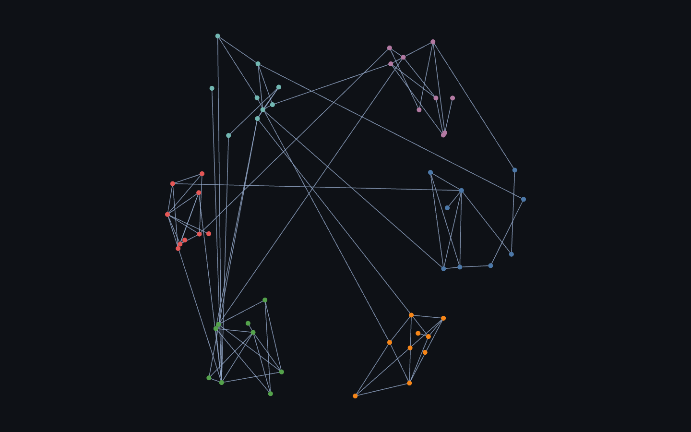
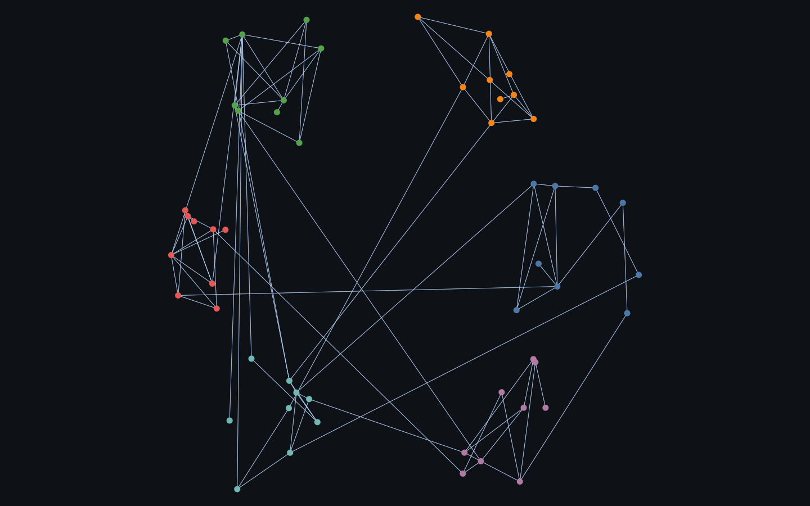
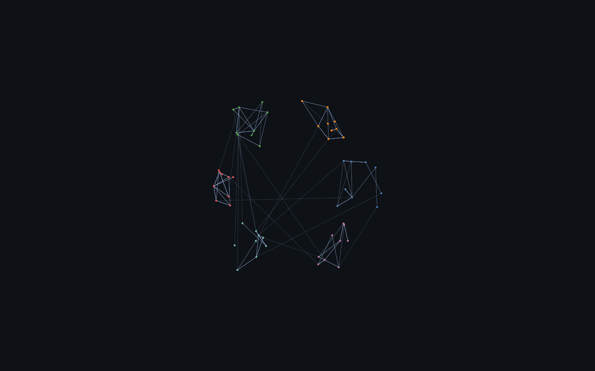
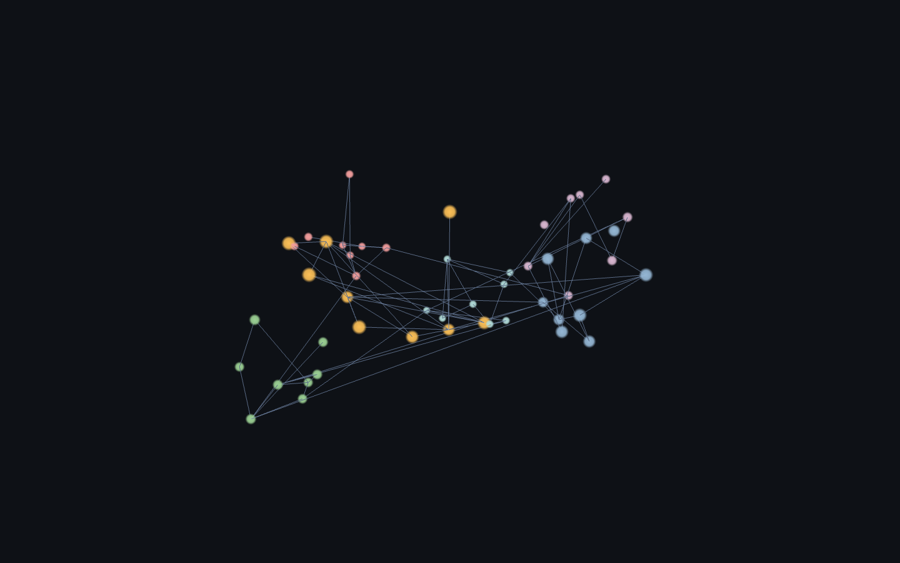
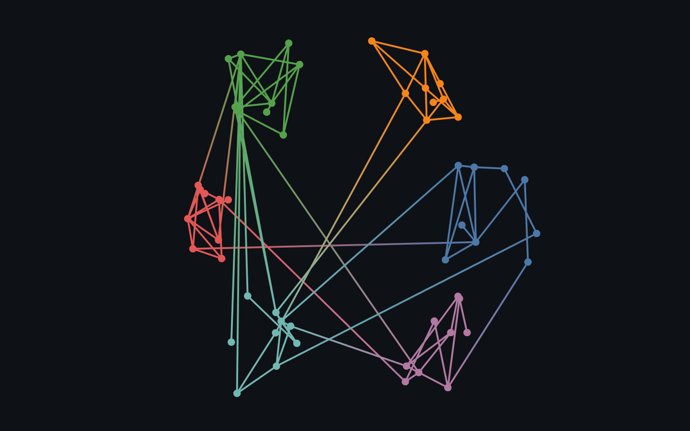

Edges / links. Cheap as hairlines; the expensive primitive when alpha-blended and dense (the graph-overview wall is edge overdraw).

Rendered on the real GPU and gate-verified — it draws, and the pixels change when the camera moves (not a frozen frame). Held 120 fps at 54 nodes / 86 edges.

Rendered on the real GPU and gate-verified — it draws, and the pixels change when the camera moves (not a frozen frame). Held 120 fps at 54 nodes / 86 edges.

Rendered on the real GPU and gate-verified — it draws, and the pixels change when the camera moves (not a frozen frame). Held 120 fps at 54 nodes / 86 edges.

Rendered on the real GPU and gate-verified — it draws, and the pixels change when the camera moves (not a frozen frame). Held 120 fps at 50 points.

Rendered on the real GPU and gate-verified — it draws, and the pixels change when the camera moves (not a frozen frame). Held 120 fps at 54 nodes / 86 edges.
| Library | Support | Notes |
|---|---|---|
| deck.gl | ✓ native · verified | LineLayer — straight GPU segments between node positions. |
| Sigma.js | ✓ native · verified | Default edge program draws links with per-edge width and colour. |
| cosmos.gl | ✓ native · verified | GPU link rendering — setLinks (index pairs). |
| three.js | ◑ workaround · verified | THREE.LineSegments (1px hairlines); Line2 is the add-on for width. |
| Helios-Web | ✓ native · verified | WebGL edge rendering. |